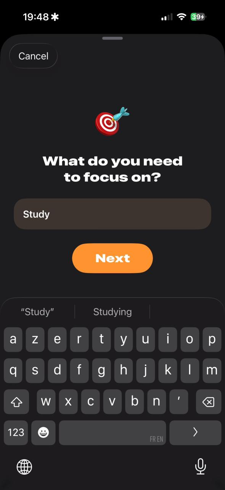
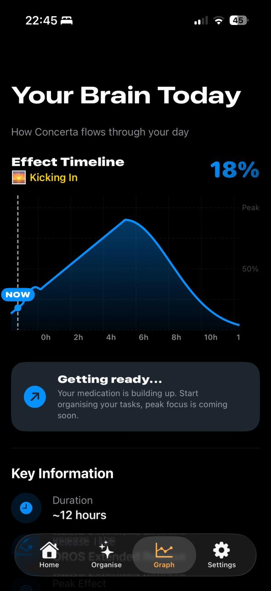

The goal: organise your day around your medication instead
of being at the mercy of it.
How? By building an AI on top of Apple's Foundation Models
framework. For every task you hand it, the model estimates
how much energy that task will demand and slots it into the
window where the methylphenidate is at its most useful
effect.
your day, organised around the dose
When a task kicks off, an ADHD-specific timer (yes, this is
being written by someone with ADHD) takes over and lets you
focus fully on the goal at hand.

name a task, start a session
The curve: drawing on mathematical estimates from multiple
methylphenidate studies, I approximated the medication's
effect as a curve that begins the moment you tell the app
you took your dose.

your brain, hour by hour
Submitted to Apple's Swift Student Challenge 2026.